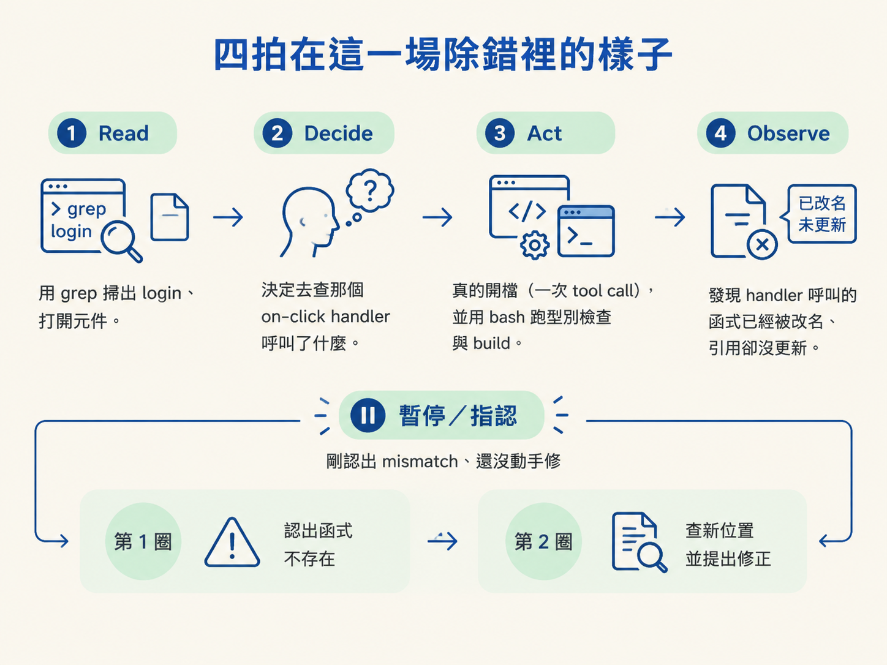
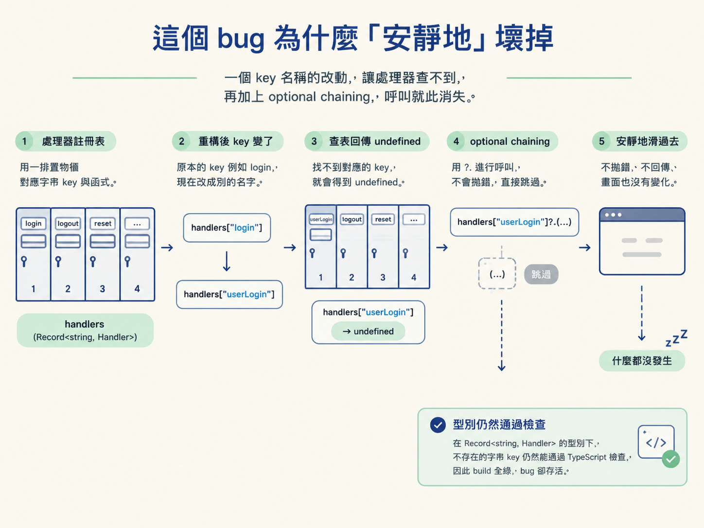

在一個登入按鈕沒反應的真實小 bug 上，逐階段認出 Read、Decide、Act、Observe，並說出那個 bug 為什麼會安靜地壞掉。
上一節把迴圈的四拍講清楚了。但那只是抽象的形狀，就像只看過泳姿分解圖，還沒真的下過水。要看懂一個迴圈，最好的方法是盯一場真實的除錯，看那四拍在時間軸上一拍一拍地發生。這一節就安排了一場這樣的除錯。
場景是一個很小的待辦清單 app，有登入表單，也有任務列表。問題出在登入按鈕上：按下去完全沒反應。
而且它壞得很機車：不報錯、不跳訊息、console 裡也沒有東西。就是什麼都沒發生。你把這句話丟給 agent：「The login button on this app doesn't seem to do anything when I click it. Can you figure out why?」然後按下 Enter，接著看著那四拍在畫面上發生。
Read 先發生。agent 一開始並不知道按鈕寫在哪個檔案裡，所以它的第一動就是搜尋：用 grep 掃出 login 相關的東西，打開找到的元件，一個一個讀，一直讀到真的找到那顆按鈕為止。
Decide 接著上場。讀到按鈕元件、看到上面掛了一個 on-click handler 之後，它做出下一個決定：「去查那個 handler 實際上呼叫了什麼。」
Act 是把這個決定付諸行動。它打開那個檔案。記住，開檔案本身就是一次真正的 tool call，是動作，不是嘴上說說。而且它不只拿眼睛看，它還用 bash 對專案跑型別檢查，甚至試著 build，確認自己有沒有在過程中弄壞別的東西。過程中它會停下來問你「要不要我套用這個修改？」，等你放行。
Observe 則看剛剛回來的結果。這一圈它看到了關鍵：那個 handler 呼叫的是一個「已經不存在的函式」。那個函式在某次重構時被改名了，但這裡的引用始終沒有跟著更新。
一圈還沒完。它接著又跑了一圈：Read 去查那個函式被搬到哪裡；Decide 確認找到的是正確的那一個；Act 提出修正的寫法；Observe 等你按下批准或拒絕。修完之後再試一次登入，這次它告訴你「你這個新使用者還沒有帳號」。這正是預期行為，代表按鈕終於呼叫到對的函式了。
到這裡，你剛剛看完的就是完整的一圈（其實跑了兩圈）。課程把「暫停、指認」的那一刻放在它剛認出那個不匹配、還沒動手修之前。那一瞬間，就是一圈的完整全貌。

看得見的錯誤其實很無聊。只要有一條 stack trace，agent 讀一下就知道問題在哪。這堂課的 bug 之所以要設計成沒有錯誤訊息，就是為了逼它真的去探索、形成假設、再驗證。所以要理解這個 demo，就得知道它壞掉的機制。
機制是這樣的。在 auth 邏輯裡有一個 handler registry（處理器註冊表），一個把字串 key 對應到函式的物件，像一排有編號的置物櫃，櫃號對上就取出裡面的函式來執行。查表的時候，程式用 optional chaining（選擇性鏈結，寫成 ?.） 去呼叫查到的函式。
optional chaining 本來是貼心的設計：它讓「對可能是空值的東西取屬性或呼叫」這件事變得安全。但代價是，一旦 key 不存在，查表回來的是 undefined，而 optional chaining 會讓「呼叫 undefined」這個動作直接變成什麼都不做，不拋錯、不回報，整條流程就安靜地滑過去。
示意起來大概長這樣：
// 一個把字串 key 對到函式的 registry
const handlers: Record<string, Handler> = {
login: loginUser,
};
// 查表後用 optional chaining 呼叫
handlers["login"]?.(credentials);只要某處引用的 key 因為重構換了名字（例如原本的 login 變成別的寫法），handlers["..."] 就會回 undefined，而 ?.(...) 讓這次呼叫化為烏有。不拋錯、不回傳、不影響畫面，這正是「按了卻什麼都沒發生」的來源。這不是硬湊的設計：command registry、action map、快捷鍵處理器都是真實在用的模式，也就是說，你自己的程式裡很可能就躺著同一顆地雷。

還有一個讓它更狡猾的細節：這個 bug 必須躲過 TypeScript。如果把 registry 型別標成 Record<string, Handler>，用一個不存在的字串 key 去索引，在一般 TypeScript 設定下仍然會通過型別檢查，因為編譯器無法在編譯期知道某個字串 key 到底存不存在於物件裡。於是 build 全綠、型別全過，bug 卻活得好好的。
這也順帶解釋了這個 demo 的驗收條件：build 必須零錯誤、後端邏輯直接呼叫時是對的，但從畫面上點下去就是沒反應。三個條件同時成立，才算這個 bug 設計成功。
在 login bug 上，Read 是 grep 找 login、打開元件；Decide 是決定去查 handler 呼叫了什麼；Act 是真的開檔（一次 tool call）並用 bash 跑型別檢查與 build；Observe 是發現 handler 呼叫的函式已被改名、引用卻沒更新。bug 之所以安靜，是因為查表拿到 undefined 後用 optional chaining 呼叫，什麼都不會發生，而這種寫法還躲得過 TypeScript。
留意一件事：它每一圈都建立在上一圈看到的東西上。這一節的 Read 很順利，所以沒出事。但如果某一圈的 Read 不完整呢？下一節要講的就是這件事：一個壞讀取怎麼把後面每一圈都拖歪，而且你會等到很晚才發現。